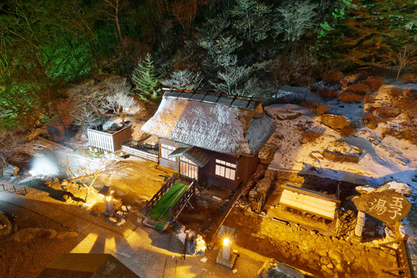
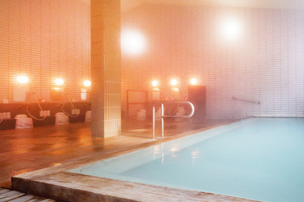
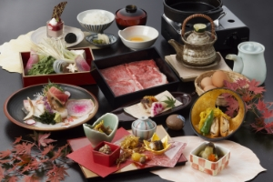

～「一切の鳴り物を禁ず」と言われている静かな温泉地～
高湯温泉 玉子湯 (福島)
「とにかく静かな場所だけど公共交通機関を使って行きたい」ならここ。
福島駅から無料のシャトルバスで30分揺られると、山の中にぽつぽつと宿が現れる。
玉子湯も高湯温泉の1つ。
山の中、鳥のさえずりや川の流れの音しか聞こえず、高ぶった神経が静まる。
温泉は透明だが、白い湯の花がたっぷりで一見青白く見える。
露天風呂だけで4箇所(うち1つ足湯、男性は3箇所)あり、内湯も2つ。
自然に身をゆだねながら熱めの温泉で疲れを癒す。
食事は石川はちみつ牛、季節会席コースなどプランも豊富。
酒所の福島らしく地酒のメニューも充実。
筆者は心身を病んだ際に療養がてら行ったが、思考がクリアになって帰った。
「静かに、でも温泉はたっぷり」を望むならここ。